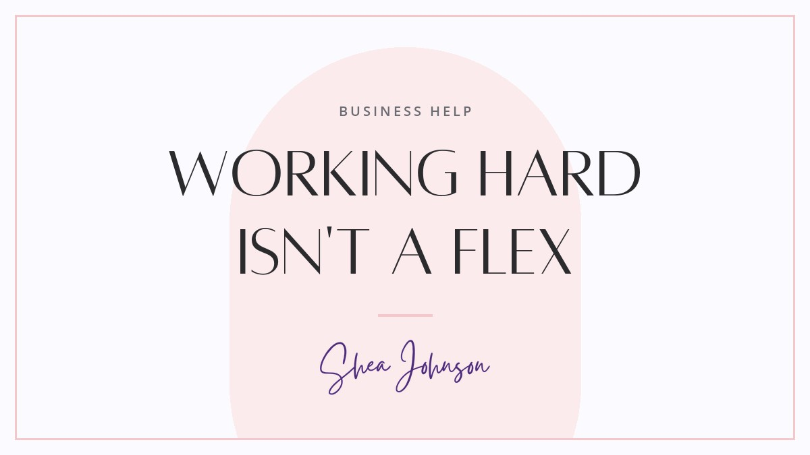

I know we hear the term self-care thrown around a lot.
We see it in headlines online.
On social media.
In different industries.
We don’t think twice about it.
We think to ourselves, “I practice self-care.”
But one day I had to actually sit down and ask myself — do I really?
And the truth?
I did it once in a while.
Once in a blue moon.
But not much.
I would see people enjoying themselves.
Laughing.
Smiling.
Having a wonderful time.
I was working so hard behind the scenes.
Most people didn’t know.
But the ones who did would always tell me how hard I worked.
And I thought that meant what I was doing was somehow better.
But somewhere along the way, I learned something that stopped me in my tracks.
I wasn’t practicing self-care the way I should have.
I wasn’t allowing myself to.
I would go long periods of time looking disheveled.
And shamefully, I can admit today — I still struggle with this.
I denied myself balance.
Work and life were not in harmony.
Even now, I go long stretches hyper-focused on a project.
No one sees or hears from me for weeks.
I’ve gotten better though — it’s days now instead of weeks. 😄
But here’s my point:
Be gentle with yourself.
Be kind to yourself.
Be patient with yourself.
The way I had to learn to be.
Find enjoyment in the smaller pleasures.
The simple joys.
Your favorite dessert.
Movie night at home instead of a trip to the theater.
That way, when you reward yourself for small wins, you don’t feel like you broke the bank.
Now — if you’re someone who already takes breaks and treats yourself regularly?
This message might not be for you.
But for those of you who struggle to do something nice for yourself — like I do?
Allow yourself the smaller wins.
Here’s what that looks like for me…
Every now and then, I make a small purchase.
Vitamins from Amazon.
A book I hope to read one day.
I don’t get my nails and toes done every week.
But I have a rule: when one breaks and it’s been a while — I go.
And food. 😄
Okay, that might be a problem for me.
Most of the time I try to eat clean and at home.
But sometimes — when I’ve been working really hard — I get comfort food from one of my favorite spots.
I go home.
Put on a good movie and kick up my feet.
For some of you, that might sound too simple.
Too basic.
Not enough.
But those are my things.
You’d have to make your own list.
And I’m sure I do other things I can’t remember right now.
But these are the most common for me.
What about you?
What does self-care look like for you?
What small wins do you allow yourself?
Visit mssheajohnson.com and subscribe so you never miss what I'm creating next.
Until next time, I hope this helps.
Be gentle with yourself.
Be kind.
Be patient.
You deserve the small wins too.